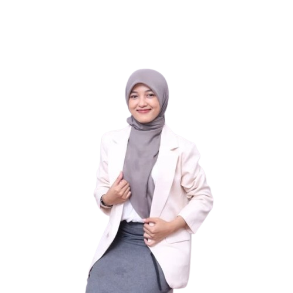
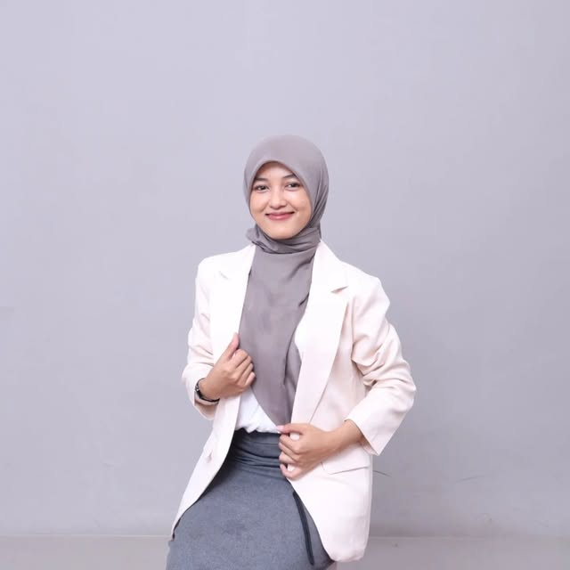

Hi pejuang IELTS! 👋 Aku Ms. Ayy — baru aja ambil IELTS Academic & General Training (2026) dengan Overall 7.5 di kedua tes dan Reading 9.0. Sekarang aku buka kelas privat 1-on-1 biar kamu bisa fokus 100% ke target skor kamu.

IELTS Specialist yang sudah membuktikan sendiri skornya — bukan cuma ngajar, sudah pernah tes dan dapat hasil nyata.

IELTS Specialist & Online Educator
Baru aja ambil IELTS Academic & General Training (2026) dengan hasil Overall 7.5 di kedua tes dan Reading 9.0. Sekarang fokus ngajar private 1-on-1 class — biar setiap sesi benar-benar personal dan kamu bisa progress lebih cepat.
Bukan janji kosong — ini skor resmi yang sudah dibuktikan sendiri.
Overall Band Score
Overall Band Score
Skor Sempurna ✨
Kurikulum kami dirancang dari strategi fundamental hingga simulasi ujian yang presisi, memastikan kamu siap untuk skor tertinggi.
Ukur progres akurat melalui Pre-Test dan Post-Test untuk tahu kekuatan & area yang perlu ditingkatkan.
Latih kepekaan pendengaran dengan beragam aksen dan tipe soal, dari dialog singkat hingga kuliah akademik.
Taklukkan teks panjang dengan teknik skimming, scanning, dan pemahaman konteks untuk jawab soal efisien.
Asah esai Task 1 & 2 yang terstruktur, koheren, dan sesuai kriteria penilaian band 7+.
Bangun kelancaran untuk Part 1, 2, & 3 melalui praktik intensif dan feedback langsung dari Ms. Ayy.
Biasakan diri dengan tekanan & format ujian sesungguhnya — bangun mental dan manajemen waktu solid.
Siswa yang udah berhasil naikin skor IELTS bareng Ms. Ayy.
"Awalnya reading aku stuck di 6.0, setelah 2 bulan sama Ms. Ayy langsung tembus 7.5! Strateginya simpel banget dan gampang dipraktekin. Worth it banget!"
"Ms. Ayy ngajarnya sabar dan to the point. Dulu aku takut banget sama Writing Task 2, sekarang malah jadi section favorit. Skor overall-ku naik dari 6.0 ke 7.0!"
"Butuh IELTS buat WHV Australia dan Ms. Ayy bantu aku capai target cuma dalam 6 minggu! Sekarang udah di Sydney nih. Tips speaking-nya beneran kepake pas interview visa!"
"Speaking aku dulu grogi banget. Setelah latihan intensif + simulasi sama Ms. Ayy, confidence aku naik drastis. Dapet Band 7.5 di first attempt!"
Temukan jawaban dari pertanyaan yang paling sering diajukan.
IELTS (International English Language Testing System) adalah tes bahasa Inggris internasional yang menilai Listening, Reading, Writing, dan Speaking. Skor IELTS dibutuhkan untuk studi ke luar negeri, beasiswa (LPDP, dll), kerja di perusahaan multinasional, dan migrasi ke negara berbahasa Inggris.
IELTS Academic untuk kuliah & registrasi profesional. IELTS General Training untuk migrasi, kerja non-akademik, atau sekolah menengah. Ms. Ayy mengajar keduanya — dan sudah buktikan skor 7.5 di kedua jenis tes!
Kurikulum mencakup 4 skill utama: Listening (berbagai aksen dan tipe soal), Reading (strategi pemahaman teks & teknik skimming/scanning), Writing (esai Task 1 & 2 sesuai kriteria band 7+), dan Speaking (simulasi interview Part 1, 2, & 3). Termasuk Pre-Test, Post-Test, dan feedback personal dari Ms. Ayy.
Kelas Reguler: 2 bulan penuh dengan sesi mingguan.
Kelas Privat: Durasi fleksibel disesuaikan dengan kebutuhan dan target skor kamu. Bisa intensif 1 bulan atau santai 3 bulan — Ms. Ayy bakal sesuaikan ritme belajar kamu.
Ya! Sebelum mulai, kamu akan mengerjakan Pre-Test singkat untuk mengetahui level awal. Hasilnya dipakai Ms. Ayy untuk menyusun materi yang pas — nggak terlalu gampang, nggak terlalu susah.
Tentu! IELTS Lite menerima semua level. Untuk pemula, Ms. Ayy akan mulai dari fondasi — basic grammar, vocabulary building, dan pemahaman format tes — sebelum masuk ke strategi ujian yang lebih intensif. Yang penting ada kemauan belajar!
Ada! Kamu akan dapat akses ke modul latihan, sesi simulasi real-test dengan timer, dan feedback langsung dari Ms. Ayy. Simulasi ini dirancang semirip mungkin dengan ujian asli — biar kamu terbiasa dengan tekanan dan formatnya.
100% online! Kelas dilakukan live via Zoom/Google Meet. Kalau kamu ada jadwal bentrok, sesi bisa direkam dan ditonton ulang. Plus, kamu bisa chat Ms. Ayy kapan aja di WhatsApp untuk tanya-tanya di luar jam kelas.
Gampang banget! Tinggal klik tombol "Daftar via WhatsApp" atau langsung chat +62 823-2270-1412. Nanti Ms. Ayy bakal jelasin detail program, jadwal, dan metode pembayaran. Konsultasi GRATIS — nggak ada kewajiban daftar!
Klik tombol di bawah, langsung chat Ms. Ayy di WhatsApp. Konsultasi GRATIS — nggak ada kewajiban!
💬 Daftar Sekarang via WhatsApp📱 +62 823-2270-1412 — fast response!